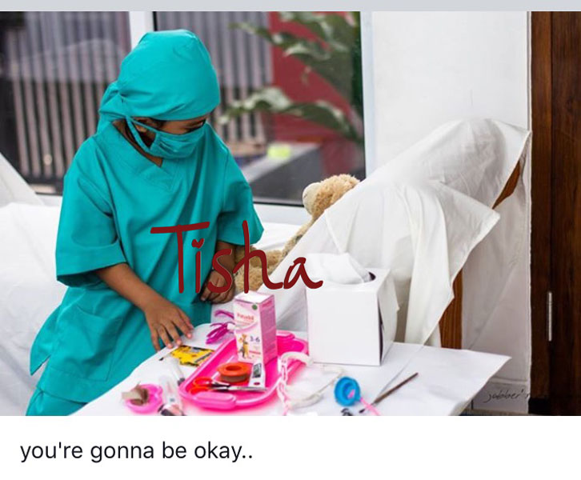

Kostum Profesi Anak
0858 9245 6044
Mengapa Baju Dokter Bedah berwarna Hijau saat Melakukan Operasi
butuh kostum profesi dokter bedah untuk Anak Anda, silakan langsung menghubungi 085892456044
Kita sering melihat adegan para dokter yang sedang melakukan tindakan operasi di film-film atau sinetron, atau mungkin juga kita pernah mengantarkan seseorang untuk menjalani operasi. Apakah Anda perhatikan semua pakaian para Dokter bedah tersebut berwarna hijau atau biru, Apakah kita pernah bertanya-tanya mengapa hijau/biru ? mengapa bukan warna lain ?

Ternyata ada alasannya loh mengapa baju Dokter Bedah harus berwarna hijau atau biru. Biasanya para dokter sehari-hari saat praktek menggunakan jas dokter berwarna putih baik itu lengan pendek atau lengan panjang, karena warna putih dianggap lambang kebersihan, lantas saat melakukan operasi para dokter menggunakan pakaian berwarna hijau adalah karena disebabkan karena saat dokter melakukan operasi maka dokter akan melihat/terpapar banyak darah yang berwarna merah dan jika terlalu lama berada dalam situasi yang penuh dengan darah seperti itu, dapat menyebabkan dokter berhalusinasi dan menyebabkan dokter akan melihat warna hijau saat melihat permukaan berwarna putih, nah hal ini disebut juga dengan ilusi optik.
Ilusi Optik terjadi karena warna putih memiliki semua spektrum warna termasuk warna hijau dan warna merah. Namun bila dokter melihat pakaian yang berwarna hijau atau biru, ilusi yang mengganggu ini akan berbaur dengan warna pakaian atau akan menyegarkan pengelihatan dokter dari hal-hal yang berwarna merah.
Para Dokter yang melihat warna merah terlalu lama juga akan bisa menyebabkan berkurangnya kepekaan atau sensitifitas terhadap warna merah. mata dokter akan kurang jelas melihat organ-organ atau jaringan dalam tubuh manusia yang sedang di operasi atau melihat benda-benda lainnya, hal ini bisa berakibat fatal.
Dokter dan Dokter bedah sangat berjasa dalam kehidupan kita untuk itu yuk dukung
Ananda tercinta untuk mencapai cita-citanya menjadi dokter bedah, berikan kostum dan peralatan yang
sesuai dengan cita-citanya tersebut, agar Ananda tercinta bersemangat mengejar cita-citanya. Langsung
saja hubungi ke WA/SMS/Telp 0858-9245-6044
untuk melihat produknya yuk klik di sini